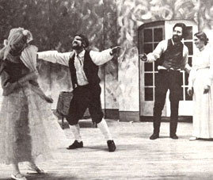

The lights dim . . . the buzz of the audience becomes a suspense-filled, rustling murmur . . . multicolored lights form magical patterns on rich folds of velvet ... slowly the curtain rises on the excitement of seeing the events of another time, another place . . . and the play begins!
This always captivating, forever mysterious ritual repeats itself all over the globe: in New York, London, Sao Paulo, Paris, Moscow . . . and in Boundary County, Idaho.
It seems no matter where you live, the thrill of watching or participating in a drama is the same. Our rural theater group's opening nights are as hectic, the stage fright as real, the curtain calls as heady, and the successes as satisfying as in any big-time production. In fact, our whole theatrical experience may be even more intense . . . since such a "cultural" outlet is sometimes the missing spice that can add a whole lot of zest to country living.
LOST IN THE FOREST
Fantastic endeavors often grow out of boredom and frustration, and that's exactly what happened in our lives.
When we first moved from urban Vancouver, British Columbia to the forests of Idaho, we were in seventh heaven . . . and actually building our own house in the beautiful north woods made us even more euphoric! But the high didn't last. One day - with our home complete-we sat and asked each other the old familiar question: "Now what?"
Longtime residents of the area had churches to attend and clubs in which to participate. Those organizations weren't off limits to us, of course, but such events as potluck suppers and grange meetings just didn't satisfy the vague craving that we felt.
CABIN FEVER STRIKES!
Time wore on, and we became desperately bored. It was a great relief to gradually discover that we weren't alone. In fact, we found that the woods were crawling with ex-urbanites who genuinely loved their natural environment, but felt somewhat alien to its social structures. We had become a tribe out of touch with its culture-even out of contact with each other -and we all suffered from the same disease: cabin fever.
Eventually, a handful of us malcontents met one night over wine and cheese, and pooled our ideas in search of a cure. It turned out that two of the group had belonged to little theaters, one located in California and the other in New Jersey.
"That's it!" cried someone. "Let's form a community theater!"
A CURE CATCHES ON
The idea was, we all agreed, a good one ... but was it possible? Such a project would surely tax all the talent and energy that might lie dormant in our backwoods area. But with the help of some free publicity in the local newspaper, we called a meeting . . . and-to our amazement-28 people showed up. Now let me explain that ours is a small county, and that number was a passel of people in this community! In fact, we suddenly had more than enough "staff" to get our first play on the boards!
SOME MINOR COMPLICATIONS
Unfortunately, we had no "boards" on which to stage our productions. On top of that . . . we had no money.
The first difficulty was solved rather readily. It was our good fortune that the town had recently built a new high school and abandoned the old building. Furthermore, the discarded structure had a marvelous stage and a big, beautiful auditorium . . . going unused.
We approached our superintendent of schools with the idea that we would utilize this empty school for the good of the community. When we agreed (right quick!) to admit students free of charge to all productions, we were granted unlimited use of the building at no cost to us.
The money question was a little harder to conquer . . . but not much! For a start, each member-family contributed $5.00, but the total collected wasn't nearly enough. The only answers we could come up with were [1] to search for patrons (at $5.00 a head) for an organization that existed in name only, and [2] to sell advertising space (at $10, $15, and $25 per ad) in a playbill for a play that hadn't even been chosen yet.
Despite the "iffy" nature of our undertaking, the business community responded to our plea with generosity. In a matter of days, we had the capital to finance the scripts, production costs, and royalties for our first play: Blithe Spirit.
THE PLAY'S THE THING
When it's time to pick a play, you'll have a wide range of farces, mysteries, comedies, tragedies, classics, musicals, etc. to choose from. In fact, there are dramas available to satisfy the taste of any community. We've found it best just to write to Samuel French, Inc. (Dept. TM EN, 25 West 45th Street, New York, New York 10036) and Dramatists Play Service, Inc. (Dept. TMEN, 440 Park Avenue South, New York, New York 10016) for their free catalogs, which cover almost all the plays known in the English language.
The lists contain brief descriptions of each drama, indicate the number of characters, the sets required, and the royalties that must be paid. Naturally, the newer and more famous-the vehicle, the higher the royalty is likely to be. But once a play is old enough to become a part of the "public domain" (Shakespeare's Othello, for instance), no fees are required.
There is a catch to putting on such "free" classics, however, because while there may be no fee on (for example) the original Ibsen version of The Master Build er, there are royalties to pay on the "revised and rewritten" editions sold by play services. The trick, therefore, is to get paperback copies of the original "classics" and then do any necessary rewriting yourself.
The average royalty will range from $25 to $50 a night, paid in advance. Unfortunately, the fees have no relationship to the amount of money taken in at the box office. Suppose the royalty is $25, and you clear $200 . . . that's fine! But if you make only $10, the fee will still be $25. And so it will remain . . . even if you charge no admission at all! (Well, the stage has always been a risky business at best . . . and little theaters are no different in this respect from the big Broadway houses.)
THE PRODUCTION CREW
An axiom in the theater says that "everyone wants to act", and it's only too true! For that reason, people who are willing to work on production-doing lights, sound, set construction, prop collection, costumes, and makeup-are worth their weight in spotlights. But in the country, nearly every member of the cast will know enough carpentry to help build sets ... and fingers that quilt and mend jeans can whip out some dynamite costumes!
A production crew should consist of at least one light person, one sound person, a half-dozen people for set construction, at least two to handle properties (all those items-from a toothpick to a sofa-that are required for the play), and two or three for costumes and makeup. (Of course, some positions can be doubled up.) It also helps tremendously to have a stage manager to "orchestrate" all such tasks .. . and take that big workload off the director.
DIRECTOR BY DEFAULT
In a country production the role of the director usually goes to whoever's had any experience whatsoever in the theater . . . and his or her first job will be to hold auditions. Then-once a play is cast rehearsals begin, and continue (ideally) for six weeks. If you allow less time, the performance won't be polished properly . . . but a longer rehearsal period often results in tired actors who are bored with their roles. A six-week schedule seems to exert just the right amount of pressure.
NEVER AGAIN!
Usually, rehearsals last four hours a night . . . and are scheduled two nights a week for the first four weeks, twice as often during the fifth week, and whatever it takes in the sixth week.
By the time that final down-to-thewire stretch is reached, most of the cast will be heard exclaiming loudly and frequently, "I'll never be in another play as long as I liver"
But wait two weeks after the final production, hold tryouts for the next performance . . . and everyone will be right there, ready to go again!
"It's like a drug," moaned one actor. "Once you get hooked on it, you can't get off."
WHY BOTHER?
A few people may become involved in a theater group for years and never appear before the footlights ... they love the backstage life. Others, however, frankly admit that they're in it for the glory.
"I love to act," said one "star". "It's the only time I feel truly alive. I guess you could say I'm a country ham in the process of being cured."
But there are other forces that drive people to devote so much loving energy to this "land of pretend". Listen to some of the members of our group:
"I work at a job that's completely unimaginative. In a play, I can actually create something!"
Another: "I'm a born exhibitionist. If it weren't for the community theater, I'd probably be arrested for streaking."
Another: "It seems my whole life has been wrapped up in my husband, my children, and my house. I need something more than that. Everybody does!"
Another: "I heard the community theater had an unsavory reputation ... so I joined it!"
Another: "I was a drama major in college, but I had to forget all that when I got married. The little theater makes me feel I haven't sacrificed all my ambition and talent."
And finally: "I. do it for only one reason," said our telephone-line-repairman-turned actor."The cast parties. The community theater has the best parties in the county!"
A SUMMARY OF SUCCESS
I guess the age-old excitement that occurs when a group of people get together to produce a play can best be summed up in the words of our northern Idaho director:
"Everyone admires the metamorphosis of the caterpillar into the butterfly. That's what we try to do here . . . take the caterpillar of a raw play and raw actors, and turn it into something beautiful that can soar on its own wings.
"Or perhaps it would be a better analogy to say that we fill the role of Dr. Frankenstein. We take a lot of diverse parts . . . assemble them into a meaningful pattern ... attempt to breathe some life into the monster. . . and hope it doesn't run amok."
Epilogue: Two years after our Boundary County Community Theater was established by a handful of amateurs, it was granted financial backing from the State of Idaho.
|
 A community theater can uncover a wealth of talent. Here, members of the Boundary County Community Theater rehearse a scene from Dickens' ""A Christmas Carol"" |
|
|